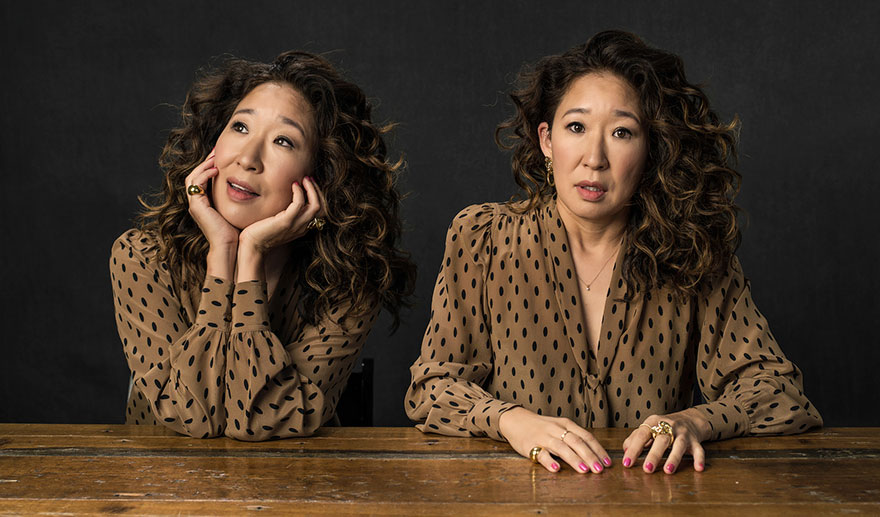

Home |
History
|
Career & Awards
|
Gallery
Sandra Oh

"I grew up never seeing myself on-screen, and it's really important to me to give people who look like me a chance to see themselves. I want to see myself as the hero of any story. I want to see myself save the world from the bomb."